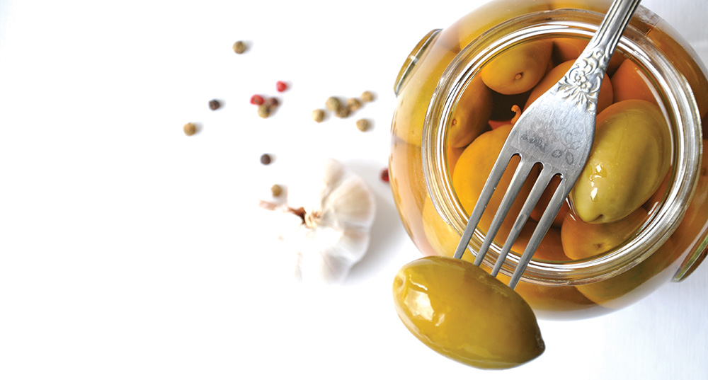

Трапези складаються з великої кількості малих страв, які вживаються всіма, хто зібрався за столом. Грецька кухня має чотири основи: свіжі інгредієнти, вміле використання приправ і зелені, котрі збирають у горах і селах, неперевершена оливкова олія та простота страв. Зовсім не випадково греки мають найнижчий показник захворювань кровообігу та серця в Європі! Меню грецької кухні в значній мірі залежить від пори року. Це зумовлено, як погодними умовами (коли дуже жарко, то обираються більш легкі страви), так і доступом до свіжих інгредієнтів.
Вже в стародавні часи оливкова олія була відома як дорогоцінний продукт. Оливкові дерева, зрізання яких каралося навіть смертю, були своєрідним предметом культу. Зараз оливкова олія використовується практично у всіх грецьких стравах. Вона характеризується чудовою якістю і має багато корисних властивостей. Знижує рівень холестерину, містить натуральні антиоксиданти, а також вітаміни Е й А.
Греки люблять добре поїсти, саме тому вони цінують смачну кухню. Не повинен дивувати той факт, що вони можуть вирушити у далеку подорож у пошуках ресторану, де подають найкращі печені сувлакі – основну грецьку страву. Завдяки ситній вечері греки не надають особливого значення сніданку. Вранці достатньо випити горнятко кави з тістечком. Приємну різноманітність вносить також гострий білий сир. На обід краще з’їсти цацикі – йогурт із часником і свіжим огірком або грецьким салатом, разом з яким подається запечена риба чи грецька запіканка – мусака.
•Extra Virgin – вміст кислот менший, ніж 1%
•Sopraffino Virgin – вміст кислот менший, ніж 1,5%
•Fino Virgin – вміст кислот менший, ніж 3%
•Virgin – вміст кислот менший, ніж 4%